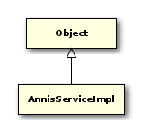

public class AnnisServiceImpl { // Public Constructors public AnnisServiceImpl();
// Public Methods public AnnisDao getAnnisDao();
public AnnisResult getAnnisResult(Long textId) throws RemoteException;
public AnnisBinary getBinary(String corpusName, int offset, int length) throws RemoteException;
public AnnisBinaryMetaData getBinaryMeta(String corpusName);
public int getMaxContext();
public List<Annotation> getMetadata(String toplevelCorpusName, String documentName) throws RemoteException;
public List<Annotation> getMetadata(long corpusId) throws RemoteException, AnnisServiceException;
public String getPaula(Long textId) throws RemoteException;
public String getWeka(List<Long> corpusList, String annisQL) throws RemoteException, AnnisQLSemanticsException, AnnisQLSyntaxException, AnnisCorpusAccessException;
public WekaHelper getWekaHelper();
public boolean isValidQuery(String annisQuery) throws RemoteException, AnnisQLSemanticsException, AnnisQLSyntaxException;
public void ping() throws RemoteException;
public void sayHello();
public void setAnnisDao(AnnisDao annisDao);
public void setMaxContext(int maxContext);
public void setWekaHelper(WekaHelper wekaHelper);
}

public class AnnisServiceRunner extends AnnisBaseRunner { // Public Constructors public AnnisServiceRunner();
// Public Static Methods public static void main(String[] args) throws IOException;
public static void shutdown();
// Public Methods public void createWebServer();
}

public class AnnisWebService { // Public Constructors public AnnisWebService();
// Public Methods public SaltProject annotate(String query, String rawCorpusNames, String offsetRaw, String limitRaw, String leftRaw, String rightRaw, String segmentationLayer) throws IOException;
public List<AnnisAttribute> annotations(String toplevelCorpus, String fetchValues, String onlyMostFrequentValues);
public List<AnnisCorpus> corpora();
public CorpusConfig corpusconfig(String toplevelName);
public Response count(String query, String rawCorpusNames);
public List<Match> find(String query, String rawCorpusNames, String offsetRaw, String limitRaw) throws IOException;
public AnnisDao getAnnisDao();
public int getMaxContext();
public int getPort();
public WekaHelper getWekaHelper();
public SaltProject graph(String toplevelCorpusName, String documentName);
public List<ResolverEntry> resolver(String corpusName, String namespace, String type);
public void sayHello();
public void setAnnisDao(AnnisDao annisDao);
public void setMaxContext(int maxContext);
public void setPort(int port);
public void setWekaHelper(WekaHelper wekaHelper);
}
- Autor
thomas